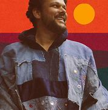
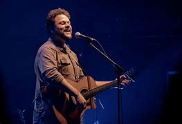
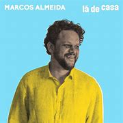
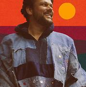
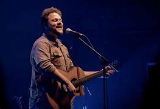
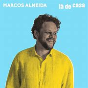

- Home
- Conteúdo
Marcos Almeida - Sê Valente
"Eu leio Rookmaaker, você Jean-Paul Sartre. A cidade foi tomada pelos homens. Na cidade dos homens tem gente que consegue ler, mas os outros estão néscios pra Ti. Eu canto Keith Green, você canta o que? A cidade está cheia de sons. Na cidade dos homens tem gente que consegue ouvir, mas os outros estão surdos pra Ti. Vem jogando tudo pra fora. A verdade apressa minha hora. Vem revela a vida que é nova. Abre os meus olhos agora. Eu fico com a escola de Rembrandt você no dadaísmo de Berlim. A cidade está cheia de tinta. Na cidade dos homens tem gente que consegue ver, mas os outros estão cegos pra Ti. Eu monto o paradoxo no palco. Você anda zombando da Cruz. A cidade está cheia de atores. Na cidade dos homens tem gente que consegue dizer, mas os outros estão mudos pra Ti. Vem jogando tudo pra fora. A verdade apressa minha hora. Vem revela a vida que é nova. Abre os meus olhos agora. Toda vez que procuro pra mim algo pra ler, ouvir, olhar e dizer, Senhor sabe o que eu quero. Não me furto a certeza: és a Vida que eu quero."
Mais de 23.000 pessoas viram a musica
 




